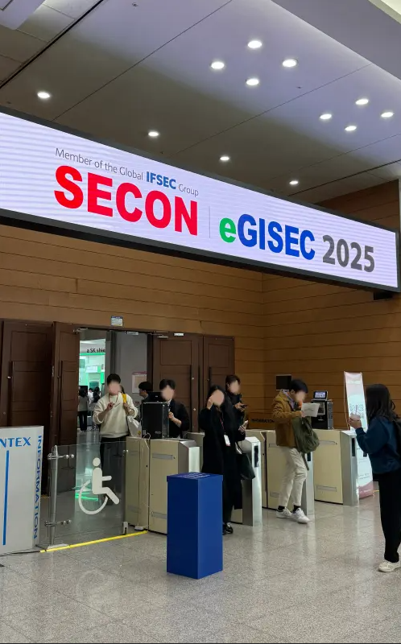
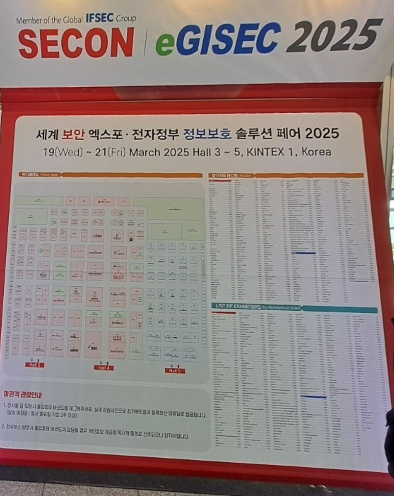
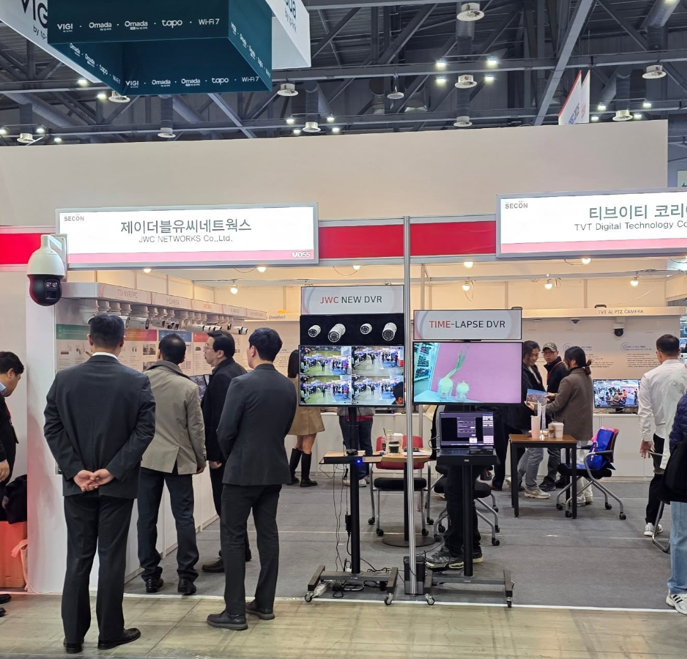
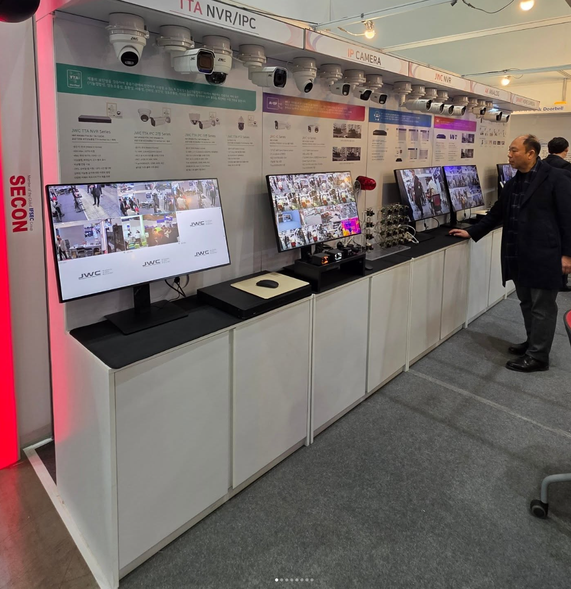

SECON 2025는 아시아 최대 규모의 통합 보안 전시회로, 2025년 3월19일부터 21일까지 일산 킨텍스에서 개최되었습니다.
 SECON 2025에 참석한 경험은 정말 인상 깊었습니다. 다양한 사이버 보안 기술과 솔루션을 접할 수 있었고, 최신 트렌드에 대한 이해를 넓힐 수 있는 좋은 기회였습니다. 특히 실시간 시연과 부스에서의 전문가들과의 소통을 통해 실무적인 인사이트를 많이 얻을 수 있었습니다.
또한 CTF 대회와 같은 체험형 프로그램을 통해 보안 기술에 대한 흥미도 더욱 커졌습니다. 다음에도 꼭 참석하고 싶은 행사였습니다!
 